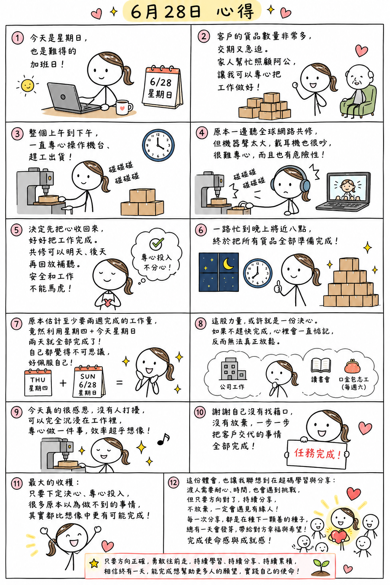

日期：2026/06/28

（系統已優化：將優先採用微軟/蘋果高級自然人聲朗讀）
今天雖然是星期日，但對我來說，也是難得可以全心投入工作的加班日。
最近客戶交代的貨品數量真的非常多，因為交期都非常急迫，所以我一直希望能趕快把它完成。剛好今天不用上班，加上家人也幫忙照顧阿公，讓我完全沒有後顧之憂，可以一鼓作氣、專心把所有工作做好。
整個上午到下午，幾乎都沒有停下來，一直專心操作機台、趕工出貨。
中間原本也一邊聽全球網路共修，希望工作和學習都能兼顧。不過機台運轉的聲音實在太大了，就算戴著耳機，耳邊還是不斷傳來「碰碰碰」的機器聲，根本很難專心聽課。而且一邊操作機台、一邊分心聽共修，其實也有一定的危險性。
後來我決定先把心收回來，好好把工作完成。網路共修可以明天、後天再回放補聽，但眼前的工作和安全不能馬虎。既然決定了，就全心投入，不再讓自己一直分心。
沒想到一路忙到晚上將近八點，終於把所有客戶交代的貨品全部準備完成。當全部收尾完成的那一刻，我自己都覺得有點不可思議。
原本估計至少需要兩個星期才能完成的工作量，竟然利用星期四加上今天星期日兩天，就全部完成了。連我自己都忍不住佩服自己，怎麼會有這麼大的動力。
後來靜下來想想，這股力量，或許就是一份決心吧。
因為我知道，如果沒有趕快把這件事情完成，心裡一定會一直惦記著。除了平日還有公司的工作之外，還有家庭、家事要照顧，每週還有讀書會、星期六的幸福口金包志工活動，以及許多早就安排好的事情。如果一直拖著，不但工作壓力不會減少，反而會讓自己的心一直掛在那裡，無法真正放鬆。
今天真的很感恩，整整一天幾乎沒有人打擾，也沒有其他事情需要分心，讓我可以完全沉浸在工作裡，全力把一件事情做好。我發現，當真正專心做一件事時，效率真的會超乎自己的想像。
所以今天，我真的很想給自己一個大大的鼓勵。謝謝自己沒有找藉口，也沒有因為工作量太大就放棄，而是一步一步地把客戶交代的事情全部完成。
今天最大的收穫，不時候解決了一大批工作，更是再次證明，只要下定決心、專心投入，很多原本以為做不到的事情，其實都比自己想像中更有可能完成。
這份體會，也讓我聯想到自己在超級生命密碼系統的學習。
分享超級生命密碼給陌生的有緣人，有時候真的需要很多耐心，也會遇到許多挑戰。有的人不理解、有的人沒有興趣，也有的人需要很長一段時間，才願意真正停下腳步，了解這套系統。
但今天完成這份工作後，我忽然有了一個新的體悟。原來，很多事情不是做不到，而是自己有沒有真正下定決心去做。
就像今天的工作量，一開始覺得幾乎是不可能完成的任務，但因為下定決心，全心投入，一步一步往前做，最後還是順利完成了。我想，分享超級生命密碼也是一樣。
渡人或許沒有想像中那麼容易，需要耐心、需要時間，也需要不斷累積自己的智慧與經驗。但只要方向是對的，只要願意持續分享，不因一時沒有成果而放棄，相信一定會遇見真正有緣的人。
每一次真誠的分享，或許都正在悄悄種下一顆善的種子；也許現在還看不到成果，但總有一天，這顆種子會在人生的某個時刻發芽，帶給對方幸福與希望。